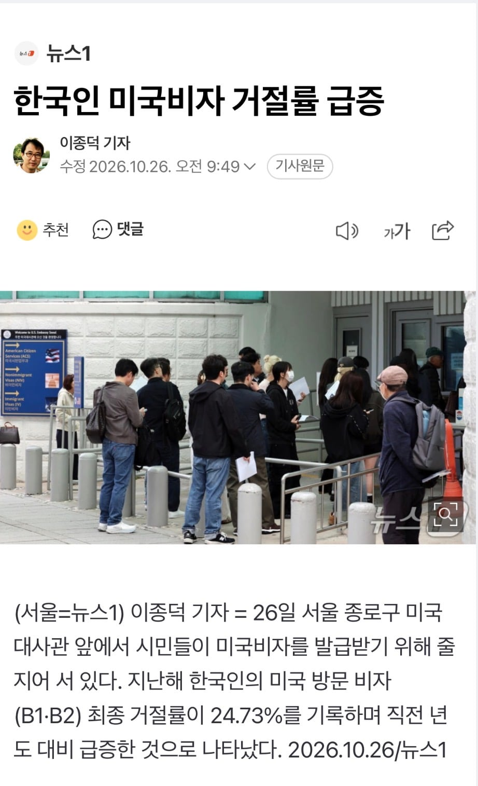
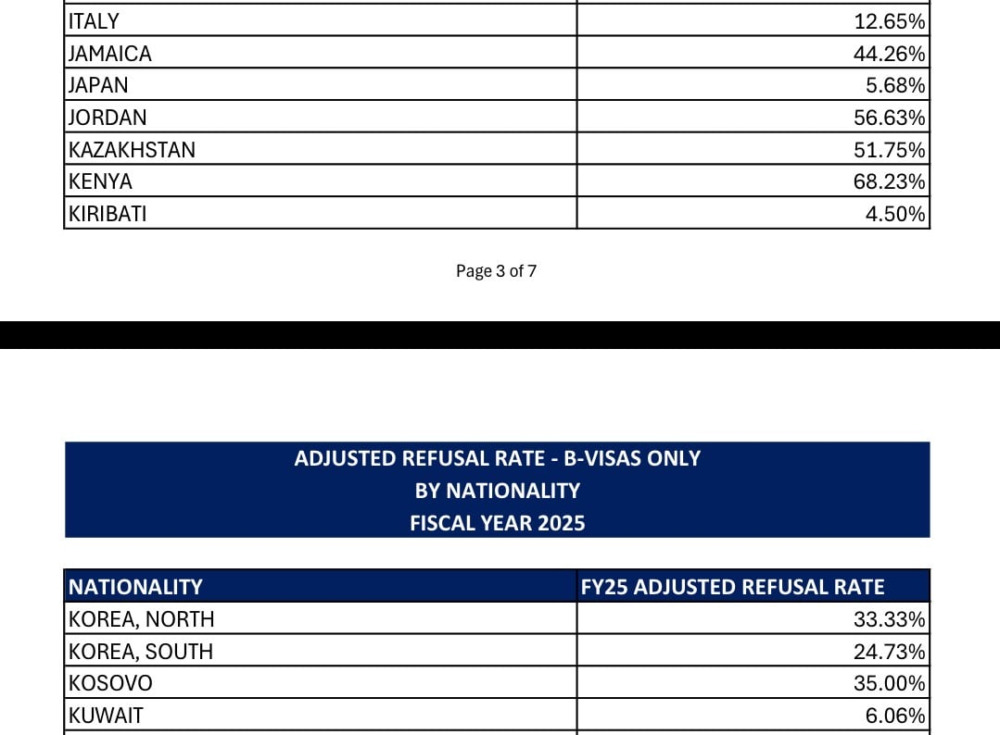

https://travel.state.gov/content/dam/visas/Statistics/Non-Immigrant-Statistics/RefusalRates/FY25.pdf
현재 4명 중 1명이 비자 거부당하는 중
멕시코, 남아공, 인도보다 거부율 높은 것으로 확인됨


https://travel.state.gov/content/dam/visas/Statistics/Non-Immigrant-Statistics/RefusalRates/FY25.pdf
현재 4명 중 1명이 비자 거부당하는 중
멕시코, 남아공, 인도보다 거부율 높은 것으로 확인됨
일 때문에 미국 들락달락 하는 입장서 써보자면
ESTA로 셋업(장비 설치)까지 가능하다
단, 설치에 대한 보수를 한국 회사에서 다 받은 경우와 계약서 상에 셋업 까지 포함이 되어 있다면 가능 함
합법적으로 ESTA로 가도 되는데 입국 심사 때 너 머하러 왔냐 질문에 "work", "Install" 같은 단어 내 뱉으면 바로 빠꾸 먹는다 그래서 대부분 수퍼바이징 하러 왔다 같은걸로 선의의 구라를 치고 들어감
암튼 ESTA로는 90일이 한계임, 장비 서너대 셋업 하려면 90일 로는 안되기 때문에 B1, B2 같은게 필요하다
회사 입장은 대충 ESTA로 비벼 볼려고 했는데, 몇 건을 더 수주 받으면 어쩔 수 없이 B1, B2 비자 받아야 하는데 이 과정서 애들 많이 떨어진다
떨어트릴 때 이유라도 제대로 알려주면 준비를 철저히 해볼텐데 이유는 확실하게는 모르고 떨군 이유의 카테고리에 따라 색깔이 다른 레터로 통지를 받게 됨
암튼 ESTA로 너무 들락달락 한 사람이 B1, B2를 시도하면 잘 떨군다는 점 정도로 알고 접근하고 있음
그럼 시작부터 B1, B2 하질 그랬어? 할수도 있는데 기업 입장서는 ESTA 대비 10배 비용 발생하는거라 미래 수주가 확실하지 않은 이상 ESTA로 들이 대는게 보통임
이유는 모르겠지만 한국 비자 거절 사례가 늘어나네? 한국 질 떨어졌네? 라는 글이면 잘못 된 접근임,
일본이랑 비교하면 안되는 이유가 지금 시기에는 한국 엔지니어가 미국 들어가서 셋업하는 경우가 압도적으로 많기 때문임
북한 비자발급 잘 나오네